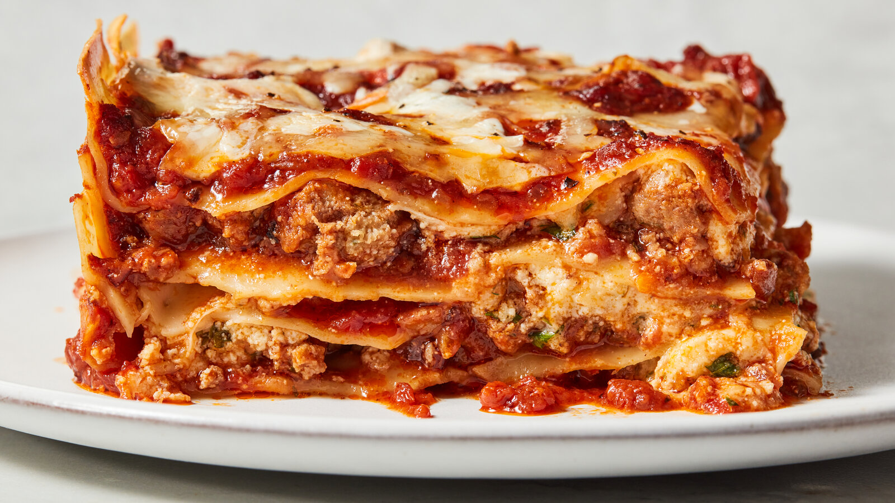

Lasagna

Description
Lasagna is a classic Italian dish made with layers of pasta, cheese, meat sauce, and bechamel sauce.
Ingredients
- 12 lasagna noodles
- 1 pound ground beef
- 2 cups marinara sauce
- 1 cup ricotta cheese
- 2 cups shredded mozzarella cheese
- 1/2 cup grated Parmesan cheese
- 2 cloves garlic, minced
- Salt and pepper to taste
Steps
- Preheat oven to 375°F (190°C).
- Cook lasagna noodles according to package instructions. Drain and set aside.
- In a skillet, cook ground beef and garlic until browned. Drain excess fat.
- Add marinara sauce to the beef and simmer for 5 minutes.
- In a baking dish, spread a thin layer of meat sauce, then layer noodles, ricotta, meat sauce, and mozzarella.
- Repeat layers, ending with mozzarella and Parmesan on top.
- Cover with foil and bake for 25 minutes. Remove foil and bake an additional 25 minutes until bubbly and golden.
- Let cool for 10 minutes before serving.
Home